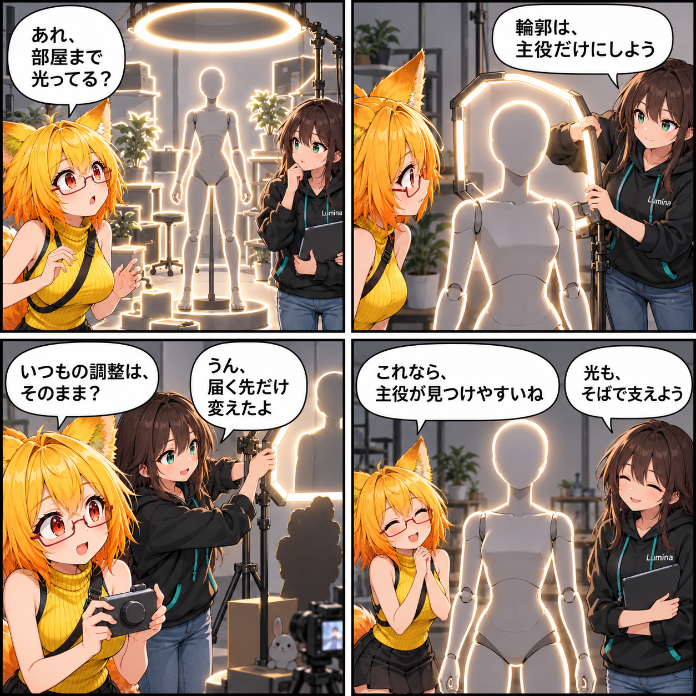

輪郭だけを、主役に残す日
スタジオのリムライトを、アバターだけを対象に描く専用パスへ置き換えました。既存の調整入口を保ちながら、背景を巻き込まずに輪郭を見つけやすくする改善です。

アバターの輪郭を、背景から分ける
スタジオのリムライトは、アバターの輪郭を背景から見つけやすくするための光です。今回、この表現を通常のリアルタイムライトに任せるのではなく、アバターの描画情報だけを集める専用のレンダラーパスへ移しました。
背景やスタジオ小物までまとめて照らすのではなく、アバターを主役として縁取る経路です。既存のライト設定はUIと保存データの窓口として引き継ぎつつ、実際のリム表現は専用のオーバーレイ描画で扱います。
いつもの設定を、そのまま使えるように
従来のスタジオ用リムライトにある有効状態、色、方向、幅、やわらかさ、光量といった調整内容を、専用パスへ渡す形にしました。既存の設定を急に別物にせず、調整する入口は保ったまま、描画する役割だけを分けています。
専用の描画対象は、アバターとして管理されているRendererから構成します。カメラに映らないものや影だけを描くものは対象にせず、LODの選択もカメラの状態に合わせます。
描画経路として確認する
専用オーバーレイ用シェーダーと合成用シェーダーを追加し、すべてのViewer向けRenderer設定に機能が有効であることをテストで確認できるようにしました。PotaToonとの統合や、Bloomの影響範囲を扱うためのマスクもこの経路へ合わせています。
ほかにも進んだこと
この期間には、環境照明とVBG GIの扱いを共通化してCommonToonの環境光を決定的にする整理、PotaToonの背面ライト寄与の修正、デスクトップのキーボード入力経路の統一、環境プリセット自動選択の修正、内蔵ポーズの空カテゴリをUIから除く改善も入りました。
4コマの裏話
今回は、部屋全体を照らすライトのつもりで見ていた光が、実はアバターの輪郭だけを静かに助ける役へ移る話です。派手に増やすより、主役へ必要な光だけを残す小さな安心感で締めました。
まとめ
リムライトの調整入口を保ちながら、描画対象をアバターへ限定する専用パスへ移しました。スタジオの背景を巻き込まず、アバターの輪郭を見つけやすくするための土台です。
本日のひとこと
光は、主役のそばにだけ残そう。